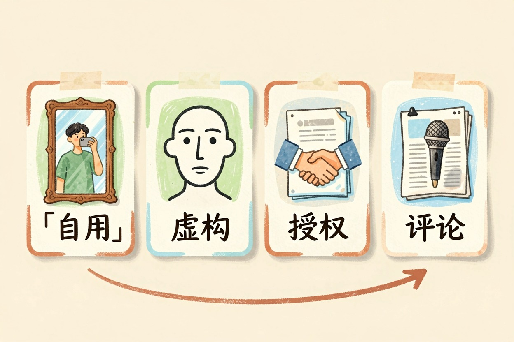
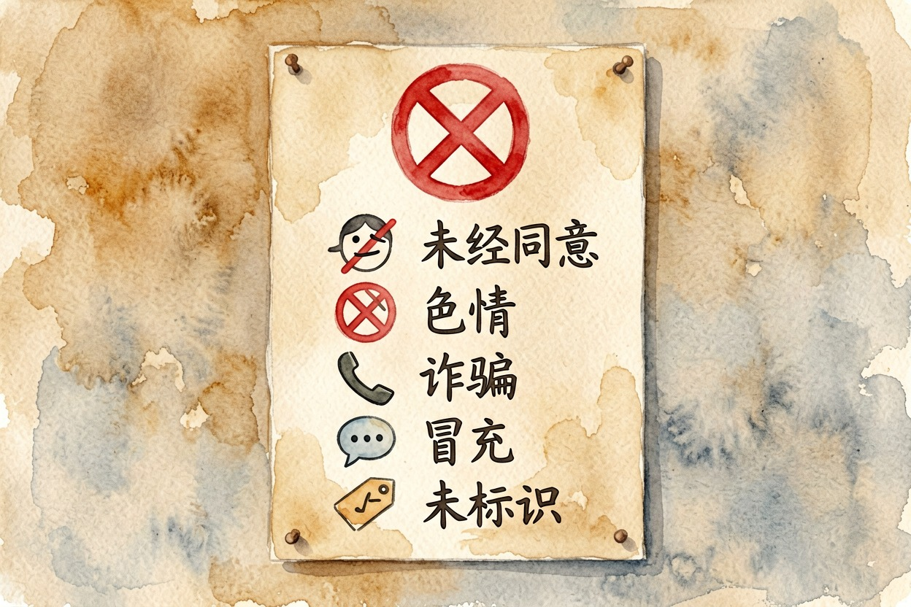
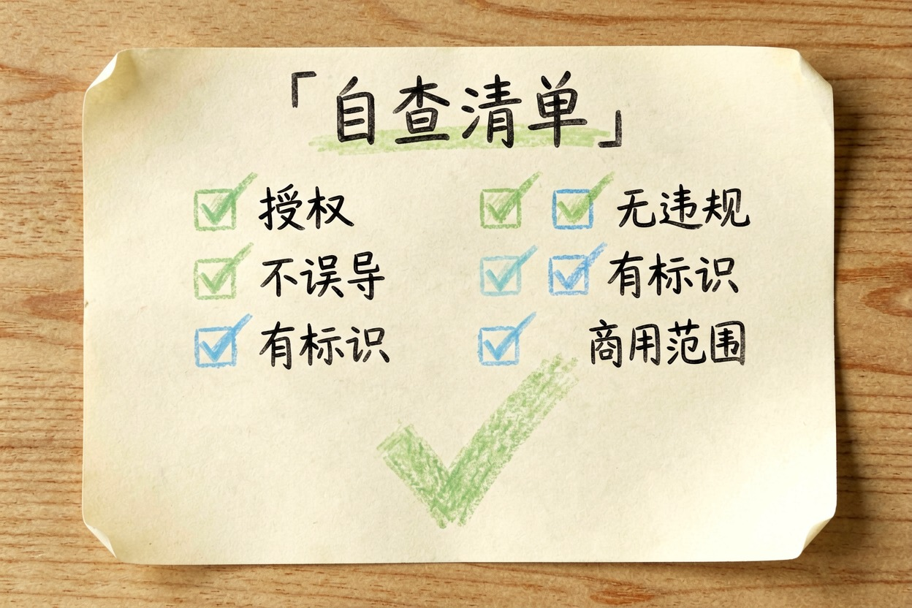
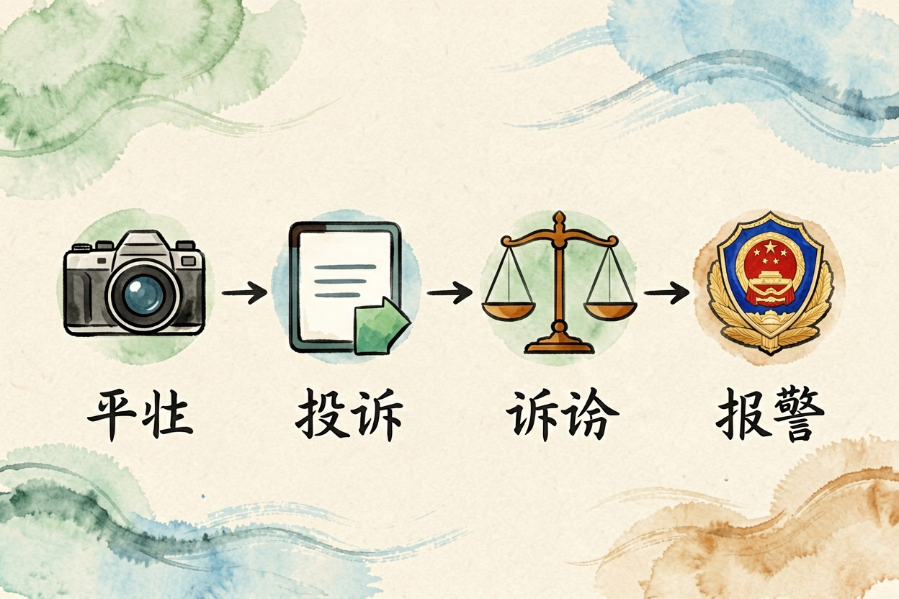
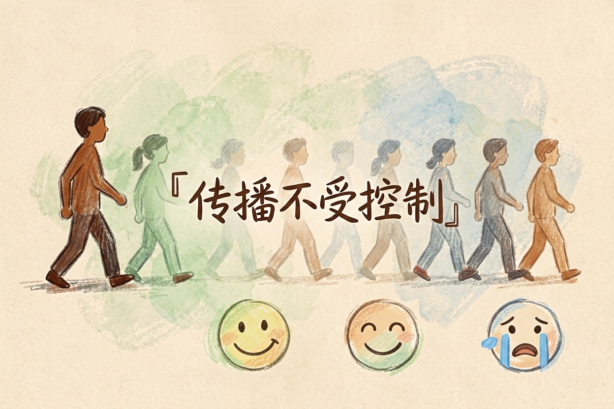

AI 换脸违法吗？边界和风险一次讲清楚 — Learntide
同一套换脸工具，放在娱乐里没事，放到别人脸上就可能出事，差别只在一个同意。
ai换脸违法吗：先看你拿它干什么

ai换脸违法吗？这个问题没有一句话答案。技术本身是中性的，影视后期、广告本地化、老照片修复都在用它。真正决定性质的是三件事：脸是谁的，用来做什么，有没有经过同意。
同一套工具，自己玩和拿去骗钱，后果差着好几个量级。
哪些用法风险比较低

用自己的脸，怎么折腾都行。换个发色、试个妆、做张搞笑图，不牵扯别人。
用完全虚构的 AI 生成人脸，也基本安全。前提是那张脸别恰好撞上真人。
拿到明确授权的同样没问题。朋友同意你把他 P 进旅行照，留个聊天记录就够。商业用途则要正规授权书，写清用途、期限、范围。
还有一类是对公众人物的评论性使用，比如新闻配图。这块空间比普通人大一些，但边界很窄，容易翻车。一旦涉及丑化、误导或者变相代言，照样要担责。
哪几条红线不要碰

第一条，未经同意用别人的脸。哪怕不发出去，只是自己存着，也已经挨着肖像权和个人信息的边。发出去就更麻烦。
第二条，做成色情内容。这是最重的一档，涉及的不只是赔钱，可能直接进刑事范畴。国内外近两年都在集中收紧这一块。
第三条，用来诈骗。换脸加变声打视频电话冒充亲友借钱，是眼下最高发的一类。这就是诈骗，跟用了什么技术无关。
第四条，冒充他人发言。让某人的脸说出他没说过的话，哪怕标了「仅供娱乐」，也可能构成名誉侵权。
第五条，商用不加标识。生成合成内容要标明来源，这是明确的合规要求。平台侧也在上自动检测，抱侥幸没什么意义。
发布前自查清单 —— 五项全是「是」才发
1. 这张脸的授权拿到了吗（书面授权书或聊天记录留痕）
2. 内容会不会让人误以为当事人真做过、真说过
3. 有没有涉及色情、暴力、金钱往来或人身攻击
4. 是否已按要求添加 AI 生成标识
5. 商用的话，授权书写清用途、期限和范围了吗被人换脸了该怎么办

第一步取证，别急着让对方删。原始链接、完整页面截图、发布时间、账号信息，全存下来。有条件就做网页公证或可信时间戳。越早存证越好，内容一删就难补回来。
第二步走平台投诉。各大平台都设了肖像侵权和 AI 伪造的专门入口，处理速度通常比想象中快。
第三步看损害程度。轻的发律师函，重的走民事诉讼，要求赔礼道歉和赔偿。涉及诈骗、敲诈或色情内容的，直接报警。
材料上，能证明「这是伪造的」很关键。原始素材、当时的行程记录、通话记录都算数。
别拿「玩玩而已」当免死金牌

最后说个常见的侥幸心理：反正没人看，反正是开玩笑。
现实是传播不受你控制。一张图发进群里，转手就可能出现在别处。追责看的是造成的实际影响，不看你当初的心情。
还要提醒一句：各地规定和司法口径都有差别，个案情形更是千差万别。这篇只讲通用思路，真碰上纠纷，找执业律师聊一次更稳妥。
回到开头那个问题，ai换脸违法吗，答案取决于你有没有拿到同意、有没有用它去伤人。
本文信息核对于 2026-08-08。AI 产品的价格、免费额度与功能变动频繁，实际以各工具官网当前说明为准。